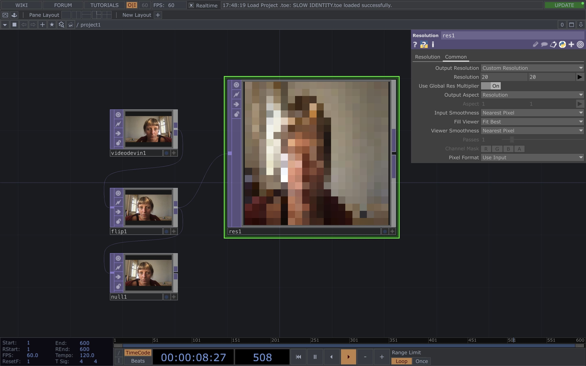

.living with your own ideas
one day, one brief, one prothesis.
in this course held by Saúl Baeza we approached differents visions and works on perceiving and being perceived.
.01 to become something else
On the first day, Saúl showed us his work with prothesis. I really enjoyed the way he showed us that prothesis can be objects (and so much more) to resist and protest. I never thought of it that way, so it opened up a lot of questions for me.
Some interesting ones that came up in class were: What is a prothesis? Is my phone a prothesis of my body? Am I a prothesis of the world?
After that, we had an awesome lecture from Manel de Aguas, a cyborg with weather sensory fins in his head that let him hear changes in atmospheric pressure, humidity, and temperature.
Then we read the article "The Fetishization of "Natural" is Old News with Dr. Naomi" by Vision By and talked about it as a group.
.01 prototype
For my prosthesis prototype, I started doing some research and thinking about how our brains instantly understand other people's faces.
As someone who rely so much on other's people expression, almost obsessively, I wish I could stop my brain sometimes. Or at least, to slow down that perception.
The question I raised was: what about a prosthesis tha slows down the first perception?
I started playing with clay on my face, focusing on the facial features that define gender and how to obscure them.
Then switched (for the first time ever) to TouchDesigner and started to play around and try to pixelate my face through the real time webcam. I wanted to understand if it was possible to slowly see myself again - without any pixel - while the time was passing (the last part didn't work cause again: it was my first time on TD ihihih but that was the idea).
.02 to become something else
On the second day we had a lecture held by Thomas Thwaites. I was amazed by him, to see how much commitment he put in his work. His work
GoatMan
really inspired me.
Then, we read an extract from
The Companion Species Manifesto: Dogs, People, and Significant Otherness by Donna Haraway and discussed it.
.02 prototype
I always dreamed about being a lichen — I think they fully embed a complex individuality. So for the prothesis I started to read this really interesting article On Becoming a Lichen and came across this beautiful poem by Arthur Sze called Lichen Song.
— Snow in the air you’ve seen a crust on the ceiling wood and never considered how I gather moisture
when you step out of the shower you don’t care that I respire as you breathe
for years you’ve washed your face gazed in the mirror shaved combed your hair rushed out
while I who may grow an inch in a thousand years catch the tingling sunlight
you don’t understand how I can dive to a temperature of liquefied gas and warm back up
absorb water start growing again without a scar
I can float numb in space be hit with cosmic rays then return to Earth
and warm out of my sleep to respire again without a hiccup
you come and go while I stay gripped to pine
and the sugar of existence runs through you runs through me
you sliver if you just go go go
if you slowed you could discover that mosquitoes bat their wings six hundred times a second
and before they mate synchronize their wings you could feel how they flicker with desire
I am flinging your words and if you absorb not blot my song you could learn
you are not alone in pain and grief though you’ve instilled pain and grief
you can urge the dare and thrill of bliss if and when you stop to look
at a rock at a fence post but you cough only look yes look at me now
because you are blink about to leave —
After reading the poem, I started reflecting on coexistence, resilience and time.
My speculative prototype involves wearing a camera on the forehead to see lichens and capture them, to be more connected and aware to these organism.
Then, on TouchDesigner, I tried to play around with recognising lichens through the webcam.

.03 detective and subject
On the last day, the brief was to judge and to be judged. We viewed an intriguing art piece on surveillance and read "The Detective" by Sophie Calle. The day was organised like this: We had 45 minutes to create a prototype to use in the 'game', then 45 minutes to act as the detective and 45 minutes to act as the subject (or, as I defined it, the victim).